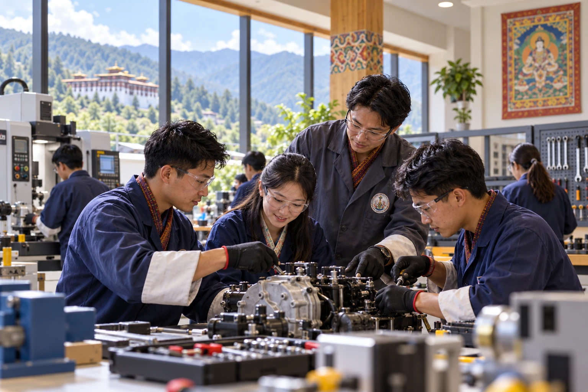

Early Childhood Care & Development
Professional preparation for nurturing, safe and development-focused early learning environments.
View detailsUgyenPee Professional Institute aims to equip Bhutanese youth with practical, technical and management skills for meaningful employment and lifelong growth.
UgyenPee Professional Institute was envisioned to strengthen Bhutan’s human resources by helping young people develop practical skills, professional confidence and workplace readiness.
Our programmes are intended to combine relevant technical learning with strong management and professional practices, supported by qualified trainers, suitable equipment and learner-focused facilities.
Read our story
Build confidence through practical activities, collaborative learning and professional skills. Our approach connects classroom understanding with the responsibilities of the workplace.

Explore our proposed programme areas. Course duration, eligibility and certification are to be confirmed for each intake.
Professional preparation for nurturing, safe and development-focused early learning environments.
View details
Essential administrative, communication and workplace management skills for modern offices.
View details
Foundational leadership, organisation and implementation skills for effective professional practice.
View detailsThe institute seeks to help young Bhutanese build qualifications, confidence and practical competence that support employment, entrepreneurship and national development.
To become a leading centre for professional and management development, recognised for empowering people and practising respect for employees and society.
To inspire, support and empower trainees through quality training that develops professional competence.

The application process is designed to be clear and accessible. Prepare your documents, choose a programme and submit your enquiry.
How to Apply